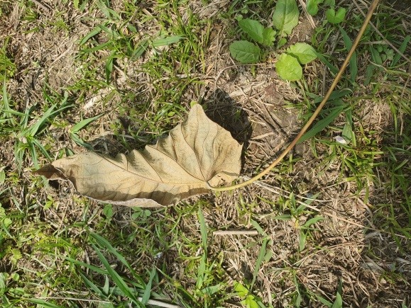
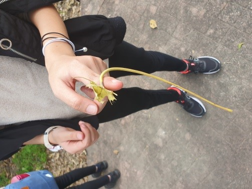
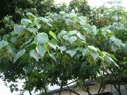
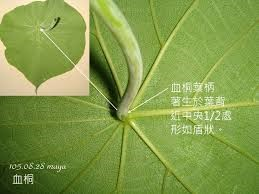
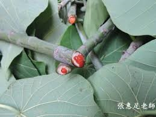

1. 你知道植物為什麼要落葉嗎？
看正解~
植物的葉片也是有壽命的，當葉片老化無法作用時，樹木會將它捨棄，重新生長可行光合作用的新葉取代。所以樹木本身都會有週期性的持續落葉。
2. 為什麼某些樹種在落葉前會變黃、變紅呢？
看正解~
因為這些樹種準備要過冬，將葉子掉光可以節省養份，掉落前葉片可以用的營養素都會回到樹體。葉子上的葉綠素分解後只剩下葉黃素和紅蘿蔔素兩種色素，就成了我們看到的紅葉或黃葉，例如楓樹、銀杏、落雨松。
3. 撿到落葉能做什麼呢？小朋友請你在溼地附近找一找有沒有跟圖片中相似的彎彎落葉，跟著影片一起來挑戰

圖一 : 血桐的落葉

圖二: 勾在手指上
遊戲方式:
1. 撿一片帶莖的彎彎落葉(如:圖一)
2. 去掉3/2的葉(如:圖二)
3. 彎彎落葉勾在食指上旋轉(如:示範影片)
挑戰任務:
和爸爸媽媽一起挑戰，看誰旋轉最久喔!
歡迎將拍照上傳桃二FB或桃二LINE群組跟大家分享
【示範影片】
示範影片中的植物_血桐
【認識血桐】

血桐是台灣原生種植物，從平地到低海拔山區都有它的身影，是夏日理想乘涼蔽樹。

血桐的葉炳像個盾牌

血桐好多別名趣聞，如:
＊盾型葉片長得像大象耳朵，英文名為「Elephant's Ear」
＊樹幹折斷處，無色透明汁液會因氧化變紅色，狀似流血，所以稱「流血樹」
＊蘭嶼達悟族飛魚季期間男人忙補魚，女人得劈柴生火，喜用血桐鬆軟耐燃薪材，故叫「女人柴」
關於血桐，還有它特別的果實你可以點進網址了解更多喔!!
參考資料: